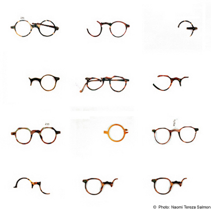
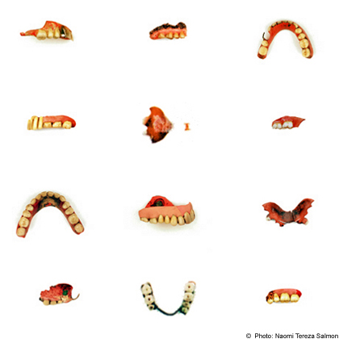
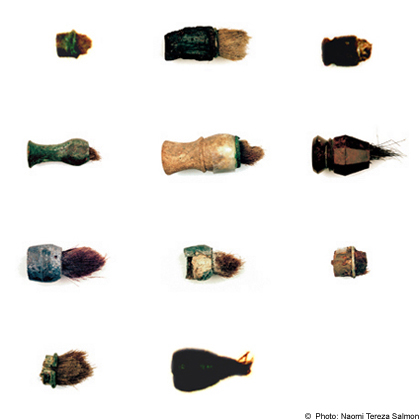

|

"Asservate", 1995. Personal Effects / Corpus Delicti: In 1989 I was commissioned to photograph relics connected with the holocaust. They were preserved in Yad Vashem, the central memorial site of the State of Israel in Jerusalem, which commemorates the Shoa. The assignment was not to produce art photos and was not directly aimed at remembrance. I was supposed to produce a documentary portrait of objects to assist in keeping records and archives. The objects themselves were mostly fragments veiled in silence. Only in very few cases were there reliable indications of their place of origin - i.e. the concentration or extermination camp, ghetto, region or country. Rarely was there any indication of who it was who had held the individual items in safe keeping and who had handed them over. They had been in the possession of persons unknown. The only sure thing was that the things had once had an owner and that they meant something to the person who had preserved them or brought them in: as a last sign, a trace of memory, a relic, a monument, an echo, an accusation or evidence of crimes. The technical nature of the assignment meant that I really became aware of these things, that is, of their silence. But during the routine process of being photographed the objects began to speak. They stood for people who had been deprived of their humanity, of the right to life, and of the right to awaken memories. Other things stood for people who were either among the perpetrators or who did nothing to stop them. The question as to who owned many of the objects remains unanswered. Self-assurance yields to confusion. The more I became aware of the nature of the things, the more I tried not to interpose myself between them and the camera. I saw my assignment as being to make myself invisible during the act of photography - so that the objects could become visible. (from “Exhibit“ Katalogue, Cantz Verlag, 1995)  Exhibits: Proofs. Real things. Traces. Relics. Objects. Things. Remains. Private property. Witnesses. Findings. Personal belongings. Fragments. Articles taken along. Corpi delicti. Necessities. Lost items. Legacy. Fraud. Memory. Mention. Intimacy. Horror. Decay. Transcendence. Smell. Substance. Through the viewer. (from: „Exhibits: Auschwitz, Buchenwald, Yad Vashem“ Cantz Publishers house Stuttgart, 1995.) *exhibit, Law. To submit (a document, object, etc.) in evidence in a court of law. (Webster’s encyclopedic Unabridged Dictionary)  Close Window All content copyright 2006 Naomi Tereza Salmon - all rights reserved |